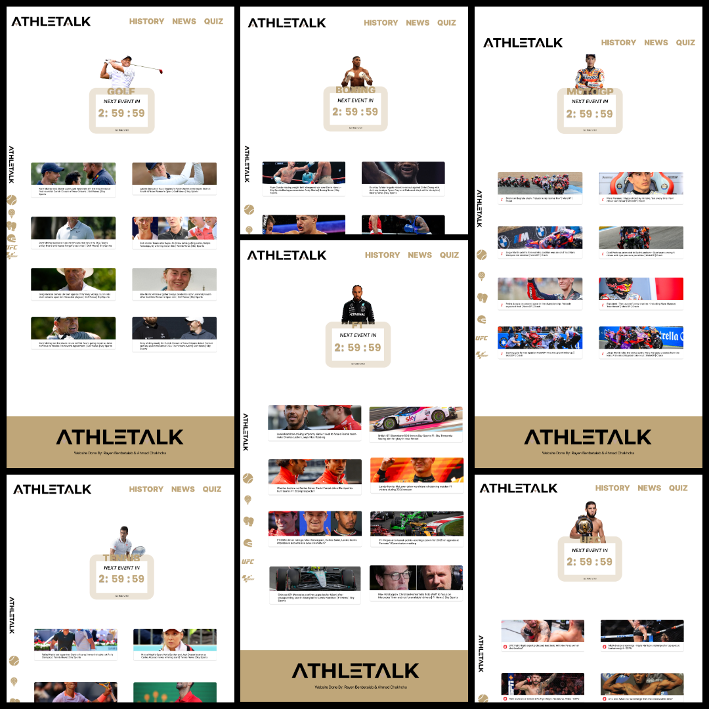

Projets
ATHLETALK
Matière : Programmation Web
Année : 2023
Établissement : Faculté Des Sciences Sfax
Plateforme web dédiée aux sports individuels, offrant un accès centralisé aux actualités, calendriers et classements pour les passionnés de Golf, Tennis, Boxe, UFC, MotoGP et Formule 1. Le projet comprend un système d'authentification utilisateur, des pages dédiées par sport avec actualités en temps réel et compte à rebours pour les prochains événements majeurs, ainsi que des fonctionnalités avancées de calendrier et de classement. Développé avec PHP, JavaScript, HTML/CSS et conçu sur Figma, le site présente une interface responsive et intuitive pour une expérience utilisateur optimale sur tous les appareils.


System d'Automatisation de Présence
Matière : Architecture des Ordinateurs
Année : 2025
Établissement : IIT Sfax
Un système innovant de gestion automatisée de la présence dans un environnement universitaire. Ce système exploite les technologies de reconnaissance faciale et d'intelligence artificielle pour automatiser entièrement le processus de suivi de présence, éliminant ainsi les contraintes des méthodes traditionnelles manuelles.